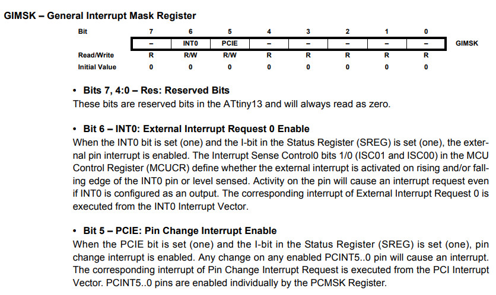
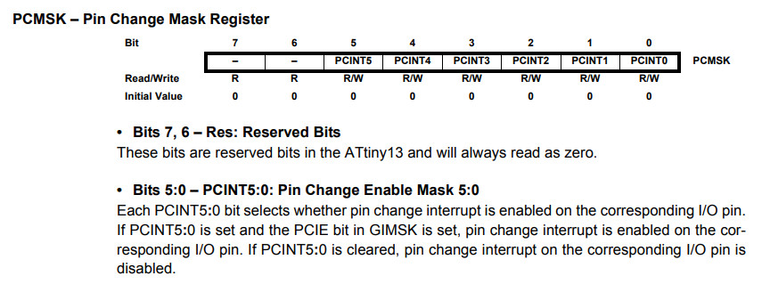
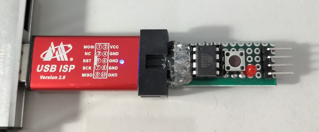
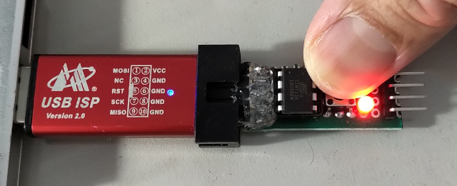

參考資訊：
https://www.microchip.com/en-us/product/attiny13#Documentation
https://nerdathome.blogspot.com/2008/04/avr-as-usage-tutorial.html
Pin Change Interrupt Enable


.equ PCMSK, 0x15
.equ PINB, 0x16
.equ DDRB, 0x17
.equ PORTB, 0x18
.equ GIMSK, 0x3b
.equ BTN, 0
.equ LED, 1
.org 0x0000
rjmp main
reti
rjmp pcint0_handler
.org 0x0010
main:
sbi DDRB, LED
cbi DDRB, BTN
sbi PORTB, LED
sbi PORTB, BTN
ldi r16, 0x20
out GIMSK, r16
ldi r16, 0x01
out PCMSK, r16
ldi r17, 0
sei
loop:
rjmp loop
pcint0_handler:
sbrs r17, 0
cbi PORTB, LED
sbrc r17, 0
sbi PORTB, LED
eor r17, r16
reti
編譯和燒錄
$ avr-as -mmcu=attiny13 -o main.o main.s $ avr-ld -o main.elf main.o $ avr-objcopy --output-target=ihex main.elf main.ihex $ sudo avrdude -c usbasp -p t13 -B 1024 -U flash:w:main.ihex:i
完成

